Elisa Cedillos
May 14 2014
Final
Question 1
Acquire, process, and understand the data for the exam:
Provide the first 5 lines of the output from gdalinfo or ogrinfo for each of the datasets.
- 35106-A5.tif
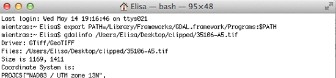
- 35106-A6.tif
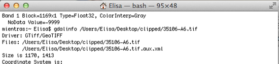
- 35106-A5_CONT.shp
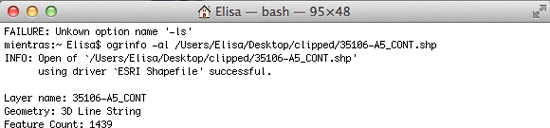
- 35106-A6_CONT.shp
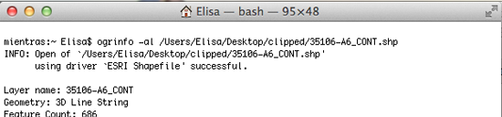
- tgr2006se_bern_lka.shp
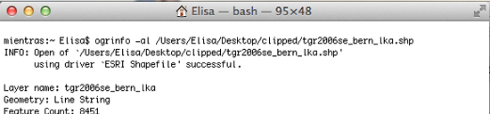
Question 2
Add the data to GeoServer, create stores and layers
Create one new “layer” for each of the stores. Include a screenshot of each of the five new layers from the GeoServer “Layer Preview” tool in your writeup
- 35106-A5
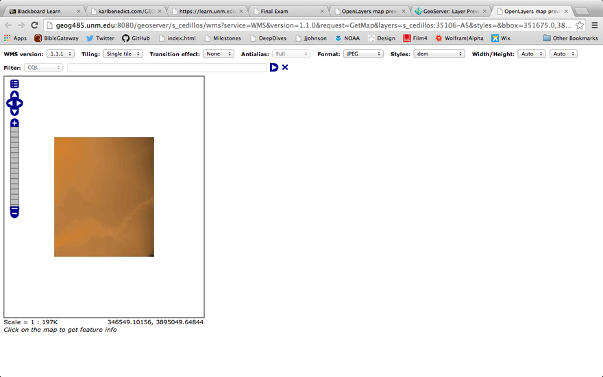
- 35106-A6
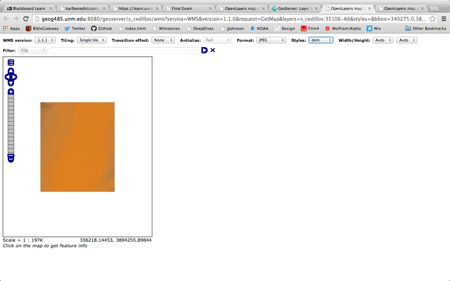
- 35106-A5_CONT
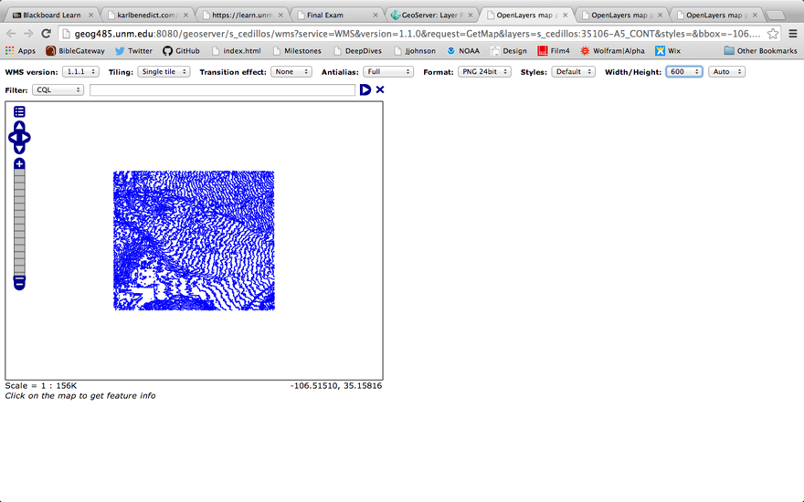
- 35106-A6_CONT
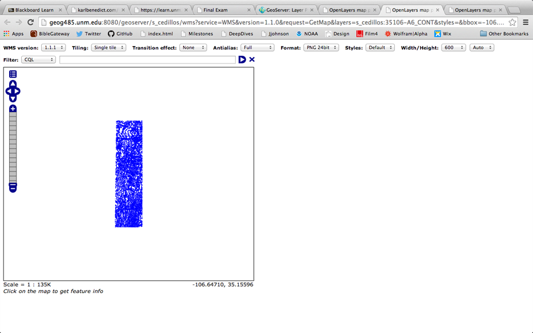
- tgr2006se_bern_lka
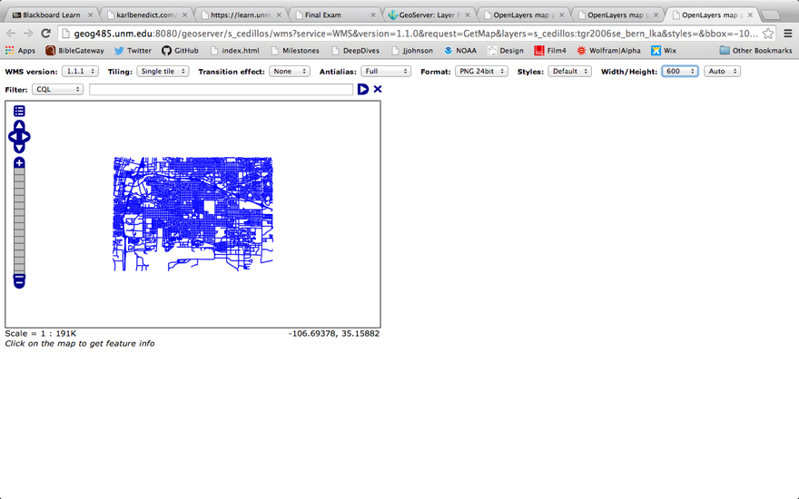
Question 3
Display any three of the GeoServer hosted layers in QGIS or ArcGIS (as a WMS layer).
Include screenshots of each of the three layers in your writeup.
- 35106-A5
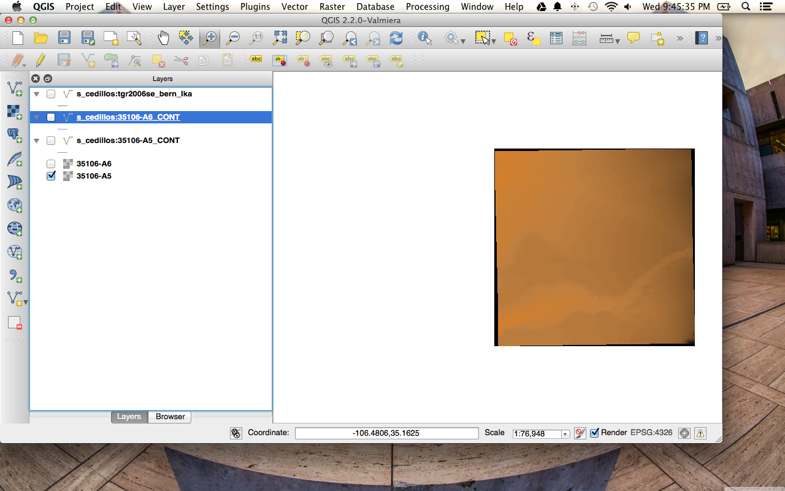
- 35106-A6
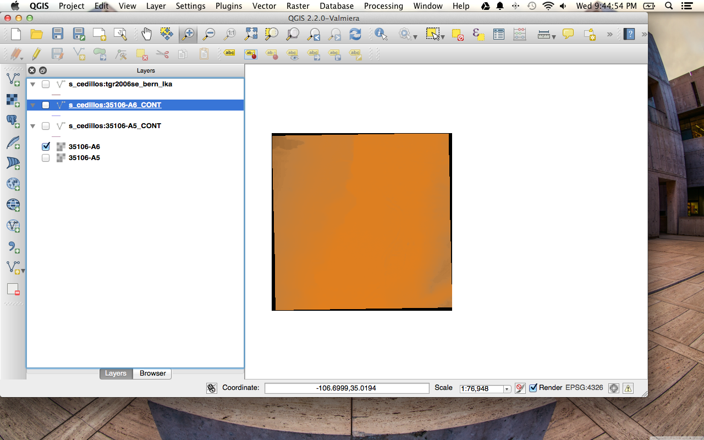
- tgr2006se_bern_lka
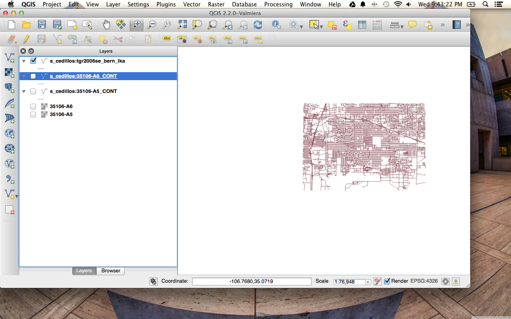
Question 4
Create a new OpenLayers web mapping client: Include each of the five layers that you created in GeoServer in the layer picker in your mapping
client.
Embed the client in your final exam web page.
Question 5
Create and add styled layers to your OpenLayers client. Add these two styled layers to the mapping client generated for question 4. Provide the layer
names for your customized layers in your writeup.
- Styled layer 1: 35106-A6_cont
Style: Fstyle_1 (blue line with blue fill)
- Styled layer 2: tgr2006se_bern_lka
Style: Fstyle_2 (black line)